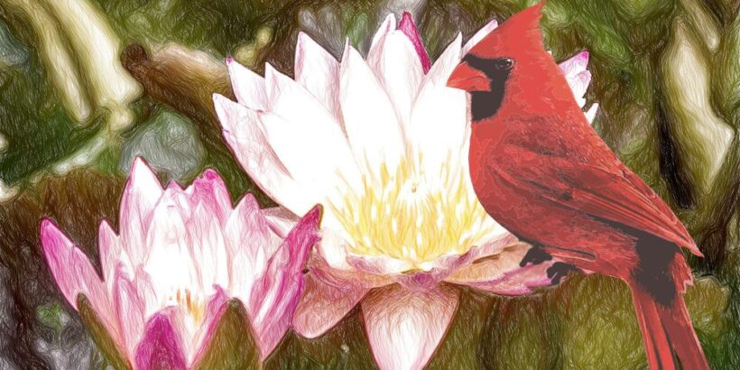
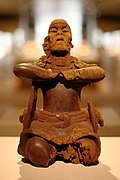
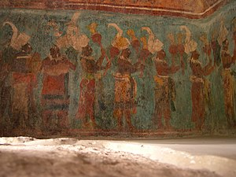

La mitología maya se refiere al conjunto de creencias, leyendas y tradiciones míticas desarrolladas por la antigua civilización maya en Mesoamérica. La cultura maya floreció en lo que ahora son partes de México, Belice, Guatemala, Honduras y El Salvador, y alcanzó su apogeo entre los siglos VI y IX d.C.
La historia maya de la creación de los quiché es el Popol Vuh. En el barro sin mucho éxito, posteriormente se crea al hombre a partir de madera con resultados igualmente infructuosos, después de los dos fracasos se crea el hombre en un tercer intento, esta ocasión a partir del maíz y se le asignan tareas que elogiaron a dioses: cortador de gemas, tallador de piedras y otros. Algunos creen que los mayas no apreciaban el arte por sí mismo, sino que todos sus trabajos eran para exaltación de los dioses.
Después de la historia de la creación, el Popol Vuh narra las aventuras de los héroes gemelos legendarios, Hunahpú e Ixbalanqué, que consistieron en derrotar a los señores de Xibalbá, del mundo terrenal. Estos son dos puntos focales de la mitología maya y a menudo se encontraron representados en arte maya.
| DEIDADES | SERES |
|---|---|
| Kukulkán | Ah Tabai |
| Chaac | Alux |
| Bitol | Uay Chivo |
| Alom | Xecotcovach |
| Ixpiyacoc | |
| Mulzencab | |
| Tepeu | |
| Hun-Hunahpú | |
| Akaime | |
| Ajtzak |
En lo más profundo de la selva del Mayab, había un reino maravilloso, que tenía un príncipe llamado Chacdziedzib, lo cual quiere decir “pájaro cardenal”. Él estaba enamorado con locura de la hija del guardián del Cenote Sagrado: Nicté-Há, o lo que es lo mismo: “Flor de Loto”.
Un día el gran Cenote Sagrado, convencido de que Chacdziedzib debía casarse con una hija de los reyes, se opuso a sus amores con Nicté-Há, y convocó a los grandes señores, quienes decidieron que la hija del guardián del Cenote Sagrado debía morir. El bufón de la corte había oído todo y, lleno de temor, se lo contó al príncipe, el cual ordenó a su mejor guerrero ir en busca de la princesa y traerla al Palacio Real, donde la tomaría por esposa.
El noble guerrero salió a cumplir su misión; pero en la negra oscuridad de la noche, unas manos asesinas le quitaron la vida y arrojaron su cuerpo a la espesura. El bufón volvió a verlo todo. Al enterarse de lo sucedido, el príncipe del manto rojo tomó su arco, y se dirigió al Cenote Sagrado en busca de su amada. Esa noche de luna, veló su sueño bajo las ceibas.
Tan pronto amaneció, Nicté-Há fue a mirarse en las aguas quietas del Cenote Sagrado. Allí el príncipe se acercó a ella y la estrechó entre sus brazos, demostrándole que la amaba con todas sus fuerzas. Aquella escena fue interrumpida por una flecha que salió de las sombras y atravesó el pecho de la doncella. Su cuerpo frágil y sin vida cayó, hundiéndose en las aguas del Cenote Sagrado, morada de los dioses.
Lo embargaba un profundo dolor. Bañado en lágrimas, rogó a los dioses piedad y compasión. Fue tal su tristeza, que el corazón se le hizo pedazos, y cayó agonizante al borde del Cenote Sagrado sobre un charco de sangre. Los dioses lo escucharon y enviaron al Señor de las Aguas y al Señor de los Pájaros. El Señor de las Aguas bajó a lo profundo del Cenote, y convirtió el cuerpo inerte de Nicté-Há en un hermoso loto. Mientras que el Señor de los Pájaros se posó sobre el corazón del príncipe, y lo transformó en un hermoso pájaro cardenal, siempre sediento de amor.
El arte maya se refiere al arte material de la civilización maya que se desarrolló en el este y sureste de Mesoamérica a partir del Preclásico tardío (500 a.C. - 200 d.C.) y que floreció en el periodoClásico (200 d.C. - 900 d.C.). Incluye estructuras arquitectónicas, esculturas de piedra, piezas talladas de madera, modelado de estuco, pinturas, murales, escritura y libros, cerámica, piedras preciosas y otros materiales de escultura y decoración corporal. Existían muchos estilos artísticos regionales, que no siempre coincidieron con los límites cambiantes de las entidades políticas mayas. La cultura olmeca, tolteca y la de Teotihuacan tuvieron una influencia significativa en el arte maya.
El arte maya precolombino conoció una prolongada fase posclásica que terminó en el siglo XVI, cuando los trastornos asociados con la conquista española destruyeron la cultura cortesana maya y pusieron fin a su tradición artística. Las principales formas de arte tradicional que siguen en uso en la actualidad son la producción de tejidos y el diseño de las casas de los campesinos.
Aunque se cree que las tallas de madera eran comunes en el pasado, solo unos pocos ejemplos han sobrevivido. La mayoría de las tallas de madera del siglo XVI fueron consideradas objetos de idolatría y destruidas por las autoridades coloniales españolas. Los ejemplos más importantes del periodo Clásico incluyen dinteles de madera intrincadamente trabajado, en particular los provenientes de los principales santuarios piramidales de Tikal, y un ejemplar del yacimiento cercano de El Zotz.
Los relieves de madera de Tikal, cada uno formado por varias vigas, datan del siglo VIII y muestran un rey en su asiento con una figura protectora en el fondo en la forma de una «serpiente de guerra» en estilo de Teotihuacán (dintel 2 del Templo I), un jaguar (dintel 3 del templo I), o una representación humana del dios jaguar del fuego terrestre (dintel 2 del Templo IV). Otros dinteles de Tikal representan un rey obeso, llevando un vestido de jaguar, de pie delante de su asiento (dintel 2 del Templo III); y, el más famoso, un rey victorioso, vestido como un dios de la muerte astral, de pie sobre un palanquín debajo de la figura arqueando de una serpiente emplumada (dintel 3 del Templo IV). Un raro ejemplo de un objeto utilitario es la diminuta Caja de Tortuguero cubierta con una larga inscripción jeroglífica. Entre la escultura libre en madera, destaca la figura dignificada de un hombre sentado, que data del siglo VI, y que posiblemente fungía como el soporte para un espejo.
A pesar de que relativamente pocas pinturas mayas hayan sobrevivido intactas hasta nuestros días, debido al clima húmedo de las tierras bajas de América Central, se han encontrado restos importantes en casi todas las principales residencias cortesanas, especialmente en subestructuras que fueron ocultadas bajo adiciones arquitectónicas posteriores. Las pinturas murales pueden incluir motivos que muestran cierta repetitividad, como los símbolos de flores, con variaciones sutiles, en las paredes de la Casa E del Palacio de Palenque; escenas de la vida cotidiana, como en uno de los edificios que rodean la plaza central de Calakmul y en un palacio de Chilonche; o escenas rituales que incluyen representaciones de deidades, como en los murales de los templos postclásicos de Yucatán y la costa este de Belice (Tankah, Tulum, Santa Rita).
